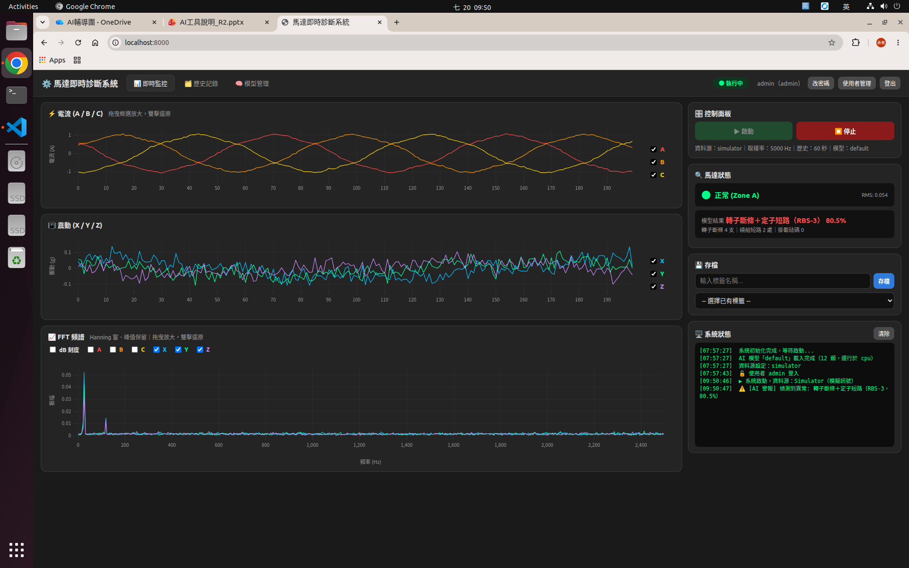
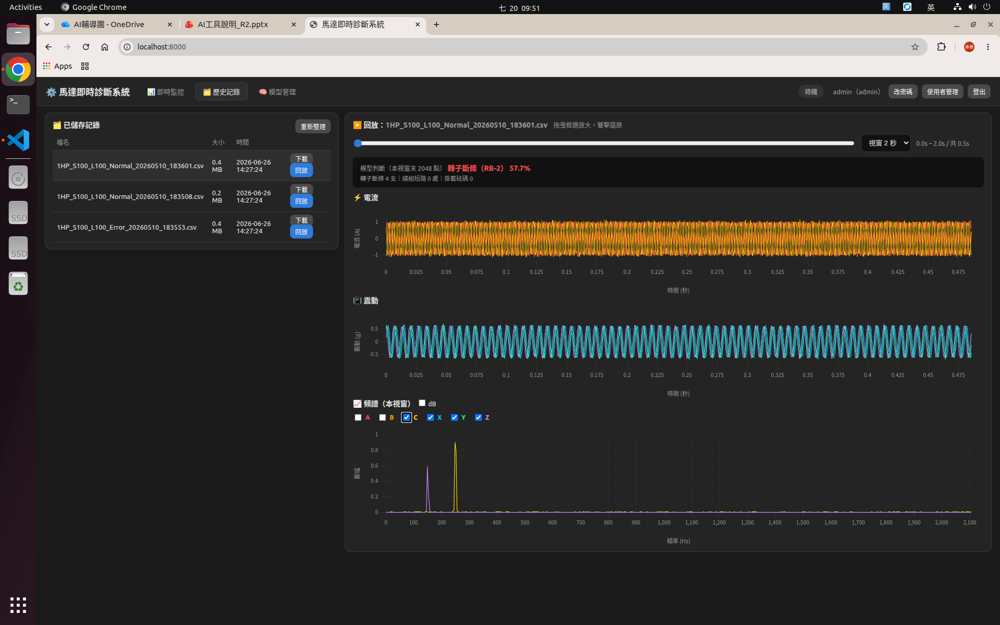
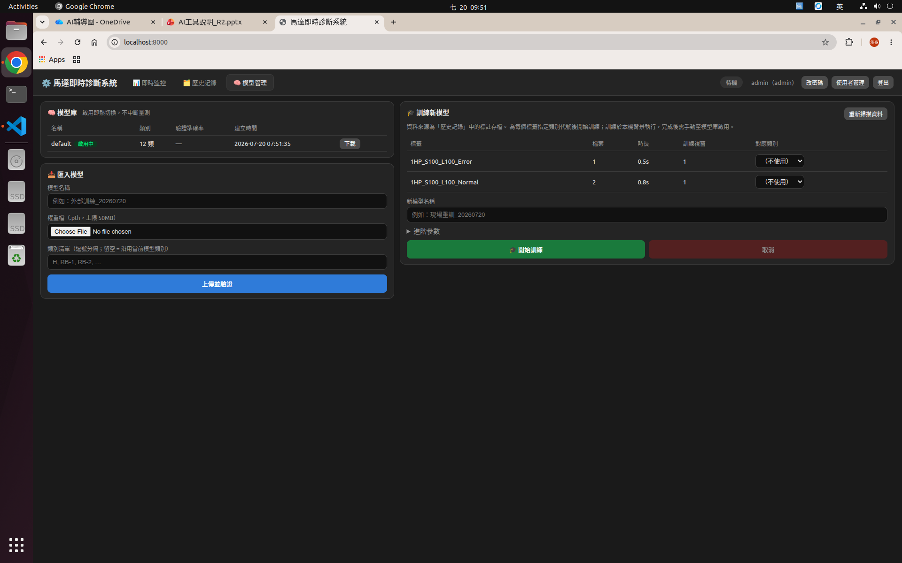

AI 故障分類 × 即時訊號監控 × 瀏覽器操作，一鍵 Docker 部署
→ 方向鍵或點擊翻頁
DAQ 同步擷取馬達 3 相電流與 3 軸振動，5000 Hz 連續串流，驅動插件化——換硬體只改設定檔。
1D-CNN 每秒分類一次，涵蓋轉子斷條、定子短路、轉子不平衡及其複合故障共 12 類，並附故障程度說明。
純瀏覽器 WebUI，多人同時觀看；admin / viewer 權限分級，登入保護與操作稽核日誌。
Docker 單一映像，x86_64 與 ARM64 通用；資料、帳號、模型全部 volume 持久化。

電流／振動六通道即時串流，可勾選通道、拖曳放大、hover 讀值。
即時頻譜同步更新，轉頻、線頻邊帶一目瞭然，支援 dB 刻度。
ISO 10816 振動 RMS 分區燈號 + AI 模型結果與故障程度說明，異常即時寫入警報日誌。
一鍵把 60 秒完整歷史存成標註 CSV——這也是後續訓練的資料來源。

標註存檔集中列表，可下載 CSV 供外部分析。
拉桿瀏覽任意片段，波形以原始 5 kHz 解析度呈現，並提供該視窗的頻譜。
拖到哪、判到哪——當前視窗即時送入模型，逐段檢視歷史資料的診斷結果。

版本管理、驗證準確率、一鍵熱切換不中斷量測，隨時可回滾。
外部訓練的權重上傳即用；安全模式載入 + 結構驗證，惡意檔案進不來。
用現場標註資料直接在部署機訓練，進度與準確率曲線即時顯示，完成後人工審核再啟用。
單一映像同時支援 x86_64 與 ARM64（Ubuntu 24.04），離線環境可用映像檔搬運部署。
資料源插件層：NI-DAQ、模擬器、CSV 回放；新增 DAQ 硬體只需一個驅動檔。
量測資料、帳號、模型全存本機 volume，備份三個資料夾即可完整還原。
docker compose up -d啟動服務下一步：接入現場 DAQ 硬體，用真實資料持續精進模型
Q & A